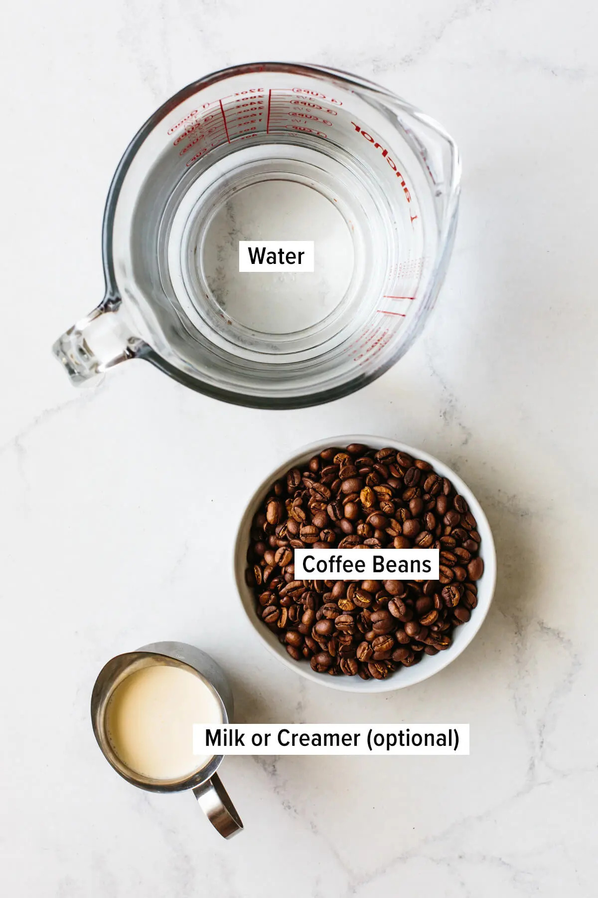
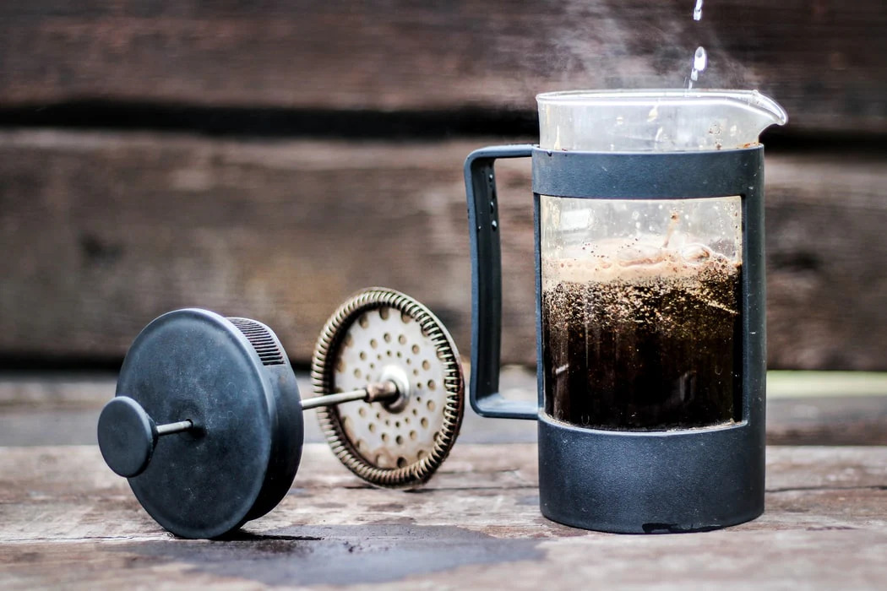
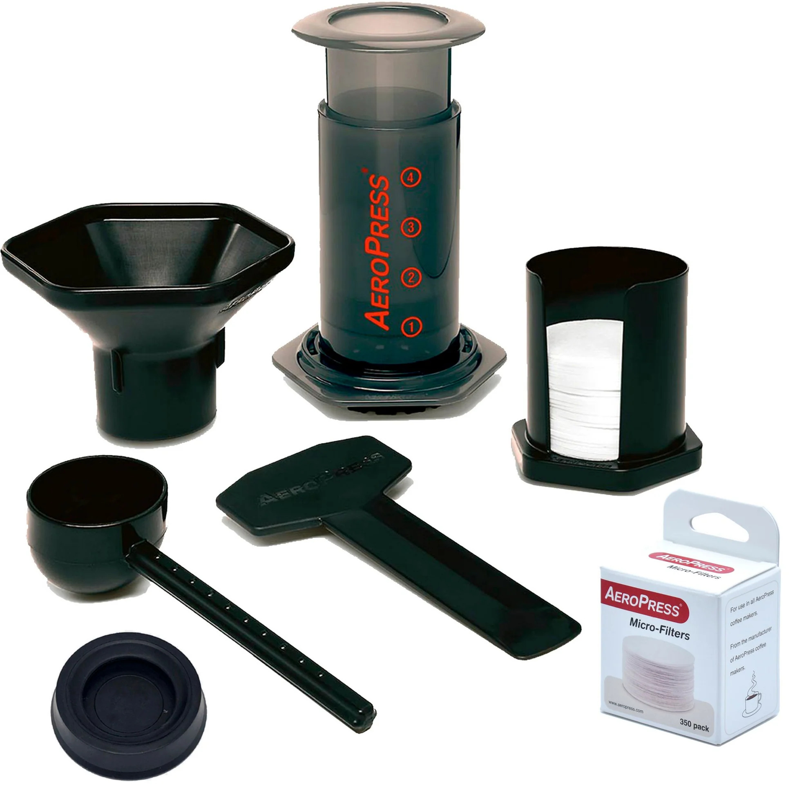
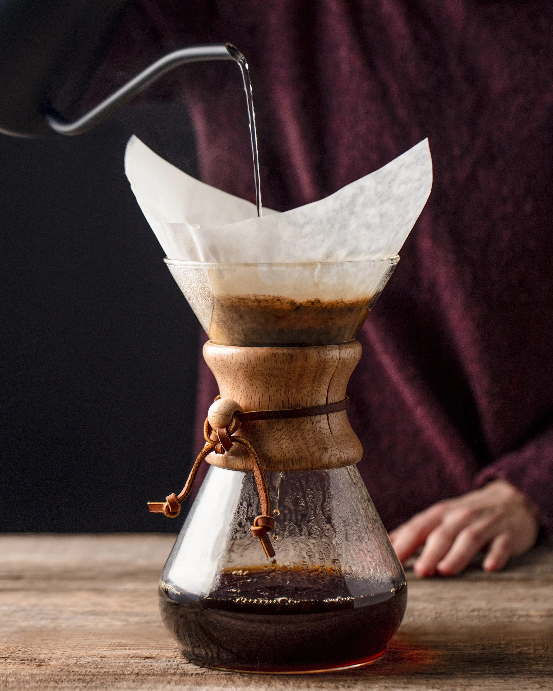
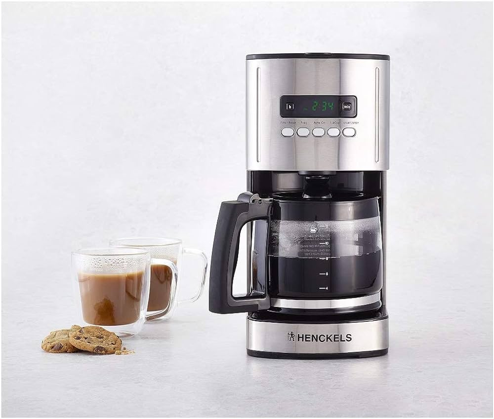
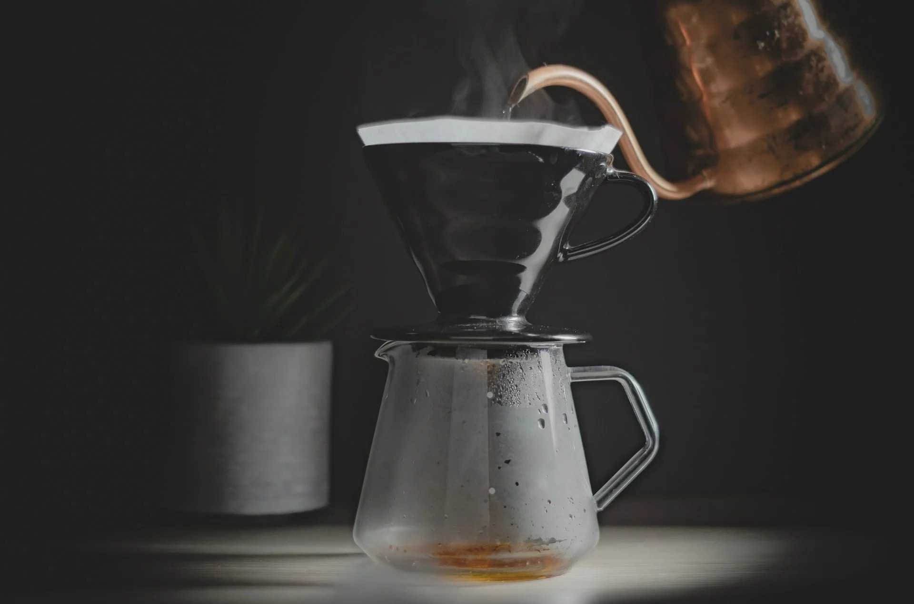
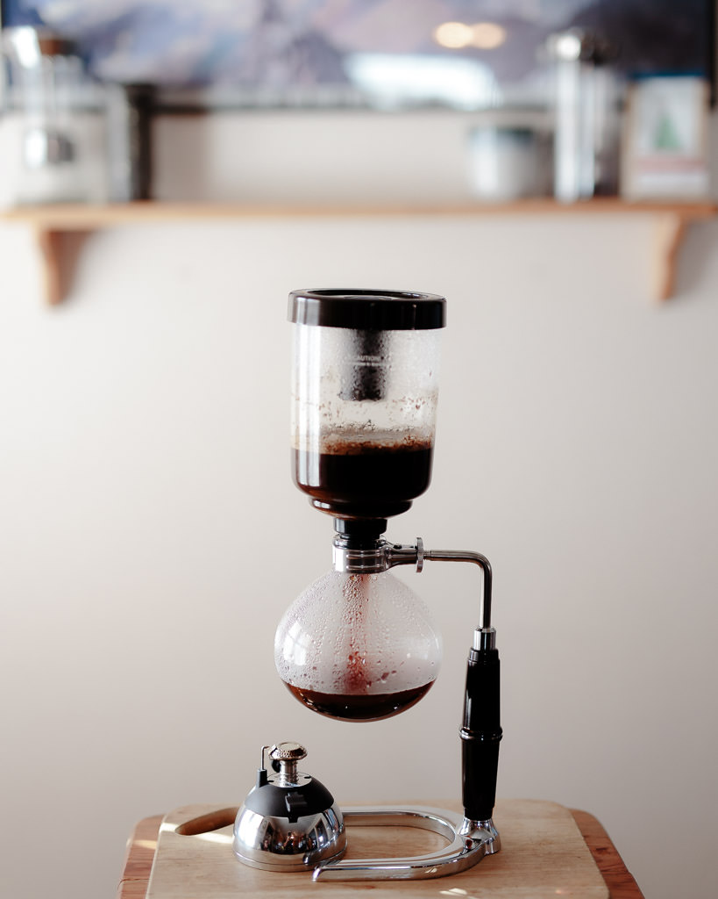

Master the Art of Brewing Coffee
Brewing coffee is both an art and a science, with each method producing a unique flavor profile and aroma. From the traditional pour-over to the modern espresso machine, there's a brewing method to suit every taste and occasion.
Join us as we explore some of the most popular coffee brewing techniques and learn how to brew the perfect cup at home.
Photo credit: downshiftology.com
More about Brewing Methods:
Understanding brewing methods is essential for coffee enthusiasts who seek to elevate their coffee experience. Each brewing method involves a unique set of variables, including grind size, water temperature, brew time, and extraction method, which ultimately influence the flavor and quality of the final cup.
Whether you prefer the full-bodied richness of French press coffee or the clean and bright flavors of pour-over coffee, experimenting with different brewing methods allows you to discover new nuances and complexities in your favorite beans.
The Classic French Press
The French press, also known as a press pot or plunger pot, is a simple yet effective method for brewing coffee. Coarsely ground coffee is steeped in hot water for several minutes, then pressed through a metal or nylon mesh filter, separating the grounds from the brewed coffee.
Many coffee enthusiasts appreciate the French press for its full-bodied flavor and rich aroma. It allows for complete immersion and extraction of oils from the coffee grounds, resulting in a robust and intense cup.
Photo credit: willaskitchen.com
Deeper Insights into French Press Brewing:
The French press brewing method offers a hands-on approach to coffee brewing, allowing you to control various factors such as water temperature, steeping time, and agitation. This method is prized for its simplicity and versatility, making it suitable for both novice and experienced coffee enthusiasts.
To achieve the best results with a French press, it's essential to use coarse-ground coffee beans to prevent over-extraction and bitterness. Additionally, experimenting with different brewing times and ratios can help you fine-tune the flavor profile to your liking.
The Versatile AeroPress
The AeroPress is a popular brewing device known for its versatility and portability. It uses air pressure to push hot water through coffee grounds, resulting in a smooth and flavorful cup of coffee in a matter of seconds.
With its quick brewing time and easy cleanup, the AeroPress is a favorite among coffee lovers who enjoy experimenting with different brewing techniques. It allows for various brewing methods, including traditional, inverted, and espresso-style, offering endless possibilities for customization.
Photo credit: belchingbarista.ca
Exploring AeroPress Brewing:
The AeroPress brewing method is celebrated for its simplicity and convenience, making it a popular choice for home and travel brewing. Its unique design allows for quick and efficient extraction, resulting in a smooth and well-balanced cup of coffee.
One of the key advantages of the AeroPress is its versatility, allowing users to experiment with different brewing parameters such as grind size, water temperature, and brewing time to achieve their desired flavor profile. Whether you prefer a strong espresso-like shot or a milder coffee, the AeroPress offers flexibility and control over the brewing process.
The Elegant Chemex
The Chemex is a beautifully designed pour-over coffee maker that produces a clean and crisp cup of coffee. Its unique hourglass shape and thick paper filters remove any sediment, resulting in a smooth and flavorful brew.
Using the Chemex is a ritualistic experience cherished by coffee enthusiasts who appreciate both form and function. Its pour-over method allows for precise control over the brewing process, resulting in a balanced and nuanced cup of coffee with clarity of flavors.
Photo credit: equatorcoffees.com
Delving Deeper into Chemex Brewing:
The Chemex brewing method emphasizes simplicity and elegance, producing a clean and aromatic cup of coffee with exceptional clarity of flavors. Its unique design, featuring a conical shape and thick paper filters, allows for optimal extraction and filtration, resulting in a crisp and refreshing brew.
When brewing with a Chemex, it's important to use a medium-coarse grind size and maintain a consistent pouring technique to ensure even extraction. Experimenting with different coffee-to-water ratios and bloom times can also help you customize the flavor profile to your preferences.
The Classic Drip Coffee Maker
Drip coffee makers, also known as automatic coffee makers or coffee machines, are a staple in many households. They work by pouring hot water over ground coffee beans, which then drips through a filter and into a carafe below.
With programmable settings and various brew strengths, drip coffee makers offer convenience and consistency for everyday coffee drinkers. They are suitable for brewing large quantities of coffee at once, making them ideal for households or offices with multiple coffee drinkers.
Photo credit: amazon.ca
Exploring Drip Coffee Brewing:
The drip coffee brewing method is characterized by its simplicity and convenience, making it a popular choice for daily coffee consumption. Drip coffee makers offer a hands-free brewing experience, allowing users to set their preferred brew strength and volume with the touch of a button.
When using a drip coffee maker, it's important to use high-quality coffee beans and clean the machine regularly to maintain optimal performance and flavor. Experimenting with different coffee-to-water ratios and grind sizes can also help you customize your brew to suit your taste preferences.
The Art of Pour-Over Coffee
Pour-over coffee is a manual brewing method that involves pouring hot water over coffee grounds in a slow and controlled manner. This allows for precise extraction and customization of flavor profiles.
Enthusiasts appreciate pour-over coffee for its ability to highlight the unique characteristics of different coffee beans. The slow and deliberate pouring process allows for optimal saturation and extraction, resulting in a clean and nuanced cup of coffee with vibrant flavors and aromas.
Photo credit: 3temp.com
Exploring Pour-Over Brewing:
The pour-over brewing method offers coffee enthusiasts a hands-on approach to coffee making, allowing for precise control over brewing variables such as water temperature, pouring technique, and brew time. This method emphasizes the importance of technique and craftsmanship, resulting in a refined and flavorful cup of coffee.
When brewing with a pour-over dripper, it's essential to use a consistent pouring technique and maintain the optimal water-to-coffee ratio to achieve balanced extraction and flavor. Experimenting with different pouring methods and grind sizes can help you unlock new flavor profiles and nuances in your coffee.
The Spectacular Siphon Brewer
The siphon brewer, also known as a vacuum pot or vacuum coffee maker, is a visually stunning brewing method that combines heat, vacuum pressure, and immersion to produce a clean and flavorful cup of coffee.
Though it requires a bit of skill and attention, the siphon brewer delivers a truly unique coffee experience that's worth the effort. The vacuum brewing process creates a delicate and aromatic cup of coffee with a clean finish, highlighting the nuances of the coffee beans used.
Photo credit: handsomewade.com
Exploring Siphon Brewing:
The siphon brewing method is renowned for its theatricality and precision, offering coffee enthusiasts a visually captivating and immersive brewing experience. By combining heat, vapor pressure, and vacuum suction, the siphon brewer extracts coffee with exceptional clarity and complexity, showcasing the unique flavors and aromas of the beans.
When using a siphon brewer, it's important to pay close attention to brewing parameters such as water temperature, grind size, and brewing time to achieve optimal results. Experimenting with different techniques and ratios can help you unlock the full potential of this sophisticated brewing method.